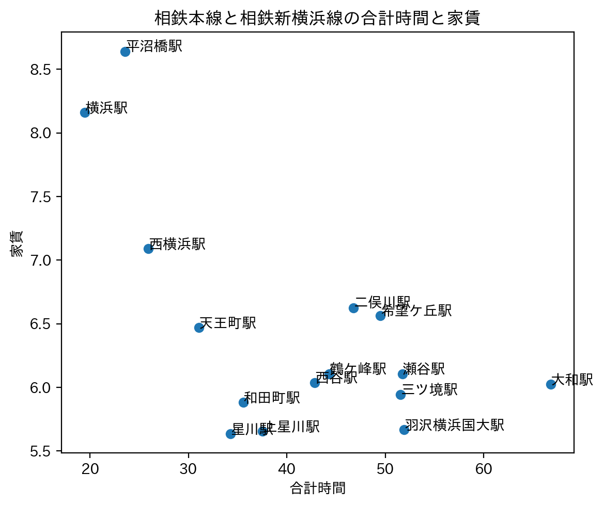
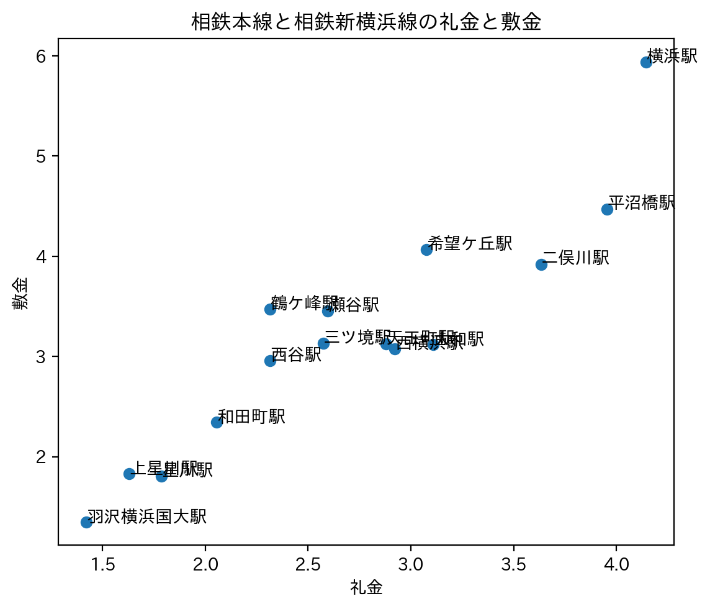
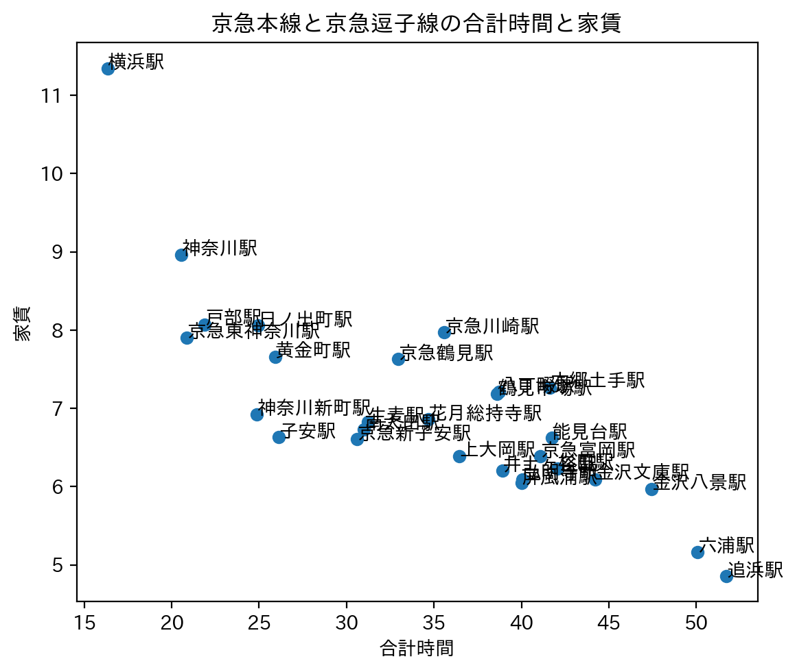
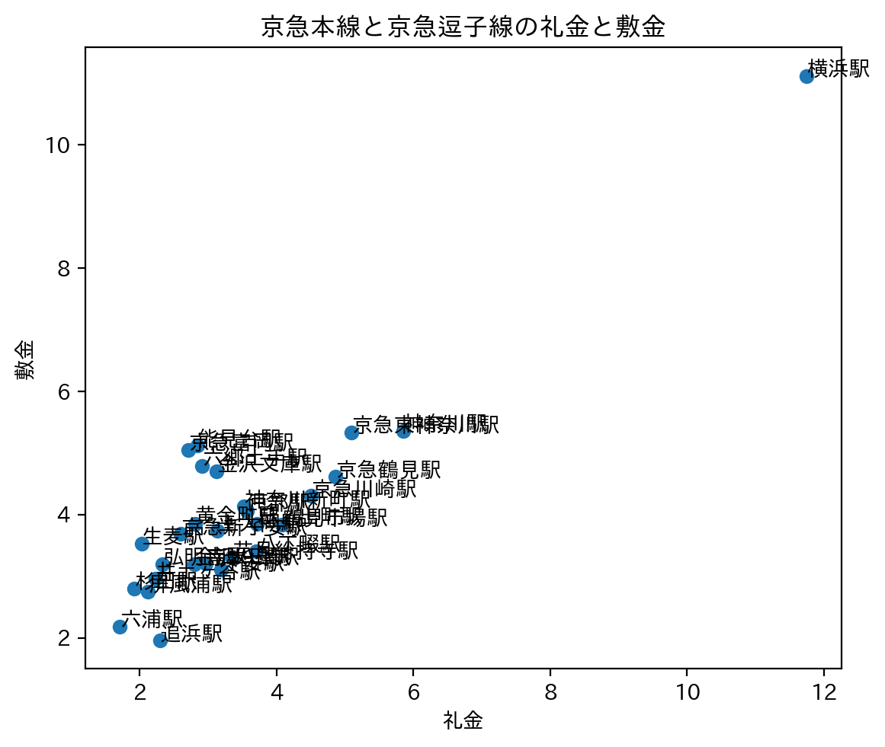

賃貸情報の分析
限界神大生（金銭的）におすすめの駅
狭くたっていい！！とにかく家賃を抑えたいんだ！！！！という神大生に向けて、おすすめの駅を紹介します。
条件は
1 平均家賃が低い
2 みなとみらい駅までの合計時間が短い（定期代を抑えるため）
3 敷金、礼金が低い
これらをピックアップしました。
路線別、通学の合計時間と家賃の散布図

この散布図より、平均時間と家賃のバランスが良い
相鉄線と
京急線に絞り込みました。
相鉄線でおすすめの駅


上の散布図を条件に照らし合わせた結果、星川駅が最も条件に合っていました。
合計時間約34分、平均家賃約5.6、敷金約2万円、礼金約1.8万円
京急線でおすすめの駅


上の散布図を条件に照らし合わせた結果、子安駅が最も条件に合っていました。
合計時間25分、平均家賃6.5万円、敷金、礼金平均約2.5万円
子安駅！！！
相鉄線、京急線、それぞれおすすめの駅を挙げましたが、圧倒的子安駅の安さ！
よって限界神大生（金銭的）におすすめの駅は子安駅です！